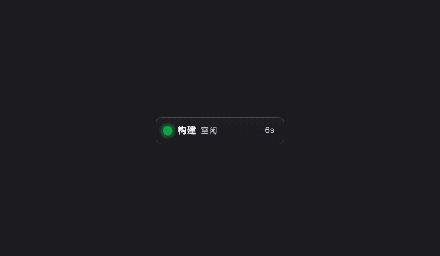
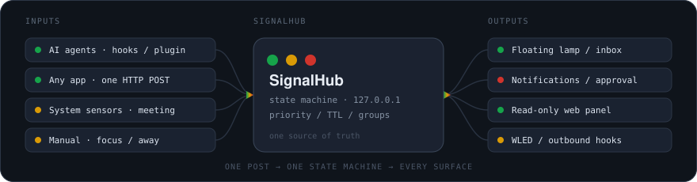

AI agents · desktop lamp · one state machine
Everything your agents are doing,
at a glance.
SignalHub is a cross-platform, always-on-top status lamp for your desktop. A stack of translucent, draggable signs shows what is happening through colour and blink rhythm. Built with AI agents in mind, but not tied to them — anything that can send one HTTP request can report a state.
- macOS
- Windows
- Linux (beta)
- No runtime needed · state stays local
When several signs are up, the ones waiting for you stand out. Lamp · live
Red outranks green — no reading required
Ten states collapse into four colours. The lamp takes the highest priority across all groups; each sign is one group, with the most urgent first. State labels are deliberately short so the name gets the width.
idle · thinking (fast blink) · working (slow blink) · doneattention — blinkingpermission (smooth blink) · error (rapid blink)stale · offline · off (monitoring paused)Red > Amber > Green A group waiting for approval is not pushed off the lamp by another group reporting "working"; once that group resumes, the red clears on its own.
- ShapePermission and error dots are rounded squares; every other state is a circle. Red and green are the hardest pair to tell apart — and these are the two that matter most.
- A thin ringA stale sign shows a ring that shrinks with the remaining grace period, so "how long has it been quiet" is visible without reading a clock.
- DimmingIn quiet mode, idle / stale / offline signs are almost transparent; only real activity or something waiting on you stands out.
Four things you'll use every day
- One line to wire up an agent
-
signalhub install hooks claude-code, then restart the agent. Claude Code / Codex / Cursor / Gemini CLI / Goose / WorkBuddy / opencode / Pi / Hermes all have one-click integrations. You can also skip agents entirely and report state yourself withsignalhub working --session demoor a single HTTP POST. - Ask for approval from the lamp
- "Approve from the lamp" moves the confirmation prompt into a bubble on the lamp (off by default; currently Claude Code's HTTP integration only). Dangerous commands need an 800 ms hold before Allow, and a truncated command can only be rejected. On timeout, or with the switch off, it says nothing at all and never answers "Allow" on your behalf — the prompt returns to the terminal.
- Inbox and jump to terminal
- Long-press the lamp for a radial menu, then an inbox ordered "waiting on you → running → just finished → idle". Each row can allow / reject, jump to its terminal tab, mute the group, or be watched with "tell me when it's done". Come back after ten minutes away and the top line summarises what happened while you were gone.
- One report, every surface
- One HTTP POST goes into one state machine, then fans out to the lamp, inbox, system notifications, a read-only web panel, phone pushes, a WLED light and multi-machine aggregation. They all take the same path, so statistics, history and forwarding work automatically — there is no second state machine.
The lamp is yours to shape
A sign is only so wide, and the text already runs to four lines — more information has to go into area and shape instead. Appearance decides what a lit lamp looks like; Behavior decides why it is lit right now. Both pages list the same six light slots.
Dot shapes · six
Pick one globally, or override colour, shape and rhythm per state.
Sign outlines · four
Built with border-radius only — clip-path would cut off the ticks along the rows and the slots at each row’s end.
Five skins (Plain / Focus / Neon / Paper / Signal) switch palette, sign tint, radius and border, dot shape, motion and frame lighting in one click. Six independent light slots — one tick above the first row and one below the last, plus four slots stacked at each row’s end — each pick a drawing style and one of nine trigger conditions: the top tick can stay on while the bottom one only lights on errors. Skins overwrite those six trigger rows too; the interface says so explicitly rather than doing it silently. Five effects: off / breathing halo / pulse / sweep / fade, all dialled down to stillness when the system asks for reduced motion.
What it looks like when it runs

state.css / lamp.css
(green #16a34a, red #d0342c, 640 / 1600 / 900 ms) —
even the rounded-square dot for permission and the 800 ms hold for dangerous commands.

You can look before installing: Settings → Demo plays looping scenes. The lamp, the inbox panel and the ring menu all use the actual product components fed with scripted data — no real state touched, no notifications, no history written. Pause, step and replay are all there.
Get started
All four platforms are built by the same pipeline. The binaries are not code-signed, so the first launch gets stopped by the OS once; the macOS workaround is below.
Download a build
.dmg for macOS (aarch64 for Apple Silicon, x64 for Intel), -setup.exe or a portable zip for Windows, .AppImage / .deb for Linux.
github.com/iFishin/SignalHub/releases/latestWire up an agent
The signalhub command ships inside the app — nothing else to install. Restart the agent afterwards.
# install the hook
signalhub install hooks claude-code
# or report a state by hand
signalhub working --session demomacOS blocks the first launch
Clear quarantine recursively so it covers the bundled signalhub command too.
xattr -dr com.apple.quarantine /Applications/SignalHub.appRun from source
Needs Node.js and stable Rust; on Windows also the Visual Studio C++ build tools.
git clone https://github.com/iFishin/SignalHub.git
cd SignalHub
npm install
npm run tauri dev